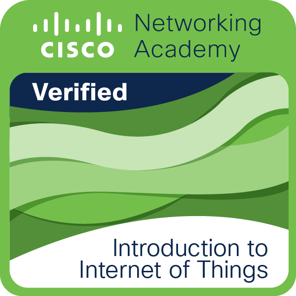
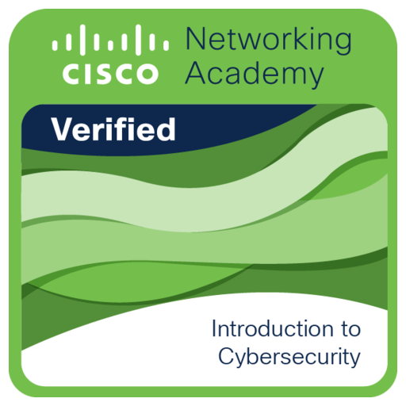
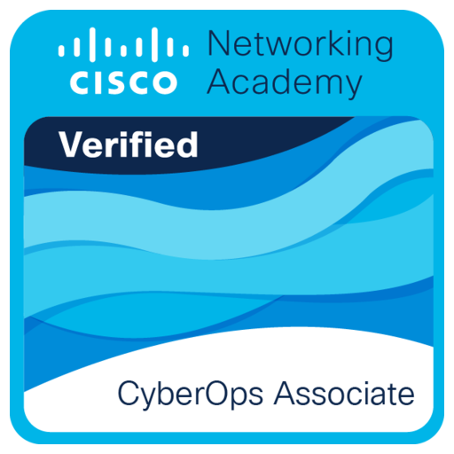

About Me
Name: Nicolai Isaiah Santos
Hello! In my free time, I enjoy experimenting with making websites. I am an FPS player who loves dogs and cars. I have 4 dogs: Sophie, Borris, Taco, and Kendi. I studied at Philippine School Doha, Our Lady of Fatima University, and currently, I am a senior Computer Science student at Holy Angel University. With a solid foundation in software development, algorithms, and data structures, I aim to become a Back-end Developer. I am proficient in Python, Java, HTML, CSS, JavaScript, Dart, and cloud computing, and I eagerly take on diverse projects to enhance my skills.
Education
- Bachelor of Science in Computer Science - Holy Angel University
- Science, Technology, Engineering, Mathematics (STEM) - Our Lady Of Fatima
- Junior High School - Philippine School Doha
Skills
- HTML | Experienced
- CSS | Experienced
- Python | Experienced
- PostgreSQL | Experienced
- SQL | Experienced
- JavaScript | Fundamentals
- Flutter | Fundamentals
- Java | Fundamentals
- PHP | Fundamentals
Creative Tools
- Adobe Premiere Pro
- CapCut
- Canva Pro
- Microsoft Office Tools
Certifications
- Introduction to IoT
- Introduction to Cybersecurity
- AWS Academy Cloud Foundations
- CyberOps Associate




Experience
- 1st Regional Blockchain Conference - Attendee
- 10th International Conference on Next Generation Computing - Attendee